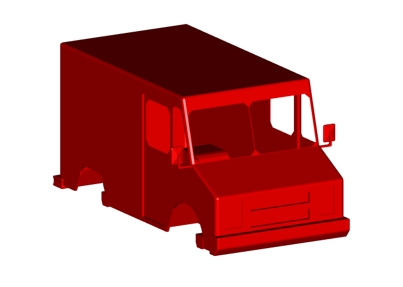

The goal of dracor is to allow decoding of the Draco compressed meshes in R. This is done by wrapping the Draco C++ decoding library with the assistance of the Rcpp package.
The original motivation for dracor was decoding neuroglancer meshes of neurons for example as used by https://flywire.ai/.
Installation
dracor is available from CRAN:
install.packages('dracor')but you can also install the development version like so:
remotes::install_github("jefferis/dracor")Example
This is a basic example using a sample from the draco repository
library(dracor)
# get sample file from draco repository
carurl='https://github.com/google/draco/blob/master/testdata/car.drc?raw=true'
car.m3d=dracor::draco_decode(carurl)
str(car.m3d)
#> List of 2
#> $ vb: num [1:4, 1:1856] 1.54 1.65 -1.21 1 1.57 ...
#> $ it: int [1:3, 1:1744] 1 2 3 3 2 4 4 2 5 5 ...
#> - attr(*, "class")= chr [1:2] "mesh3d" "shape3d"rgl is the most widely used R package for 3D visualisation. By default we return meshes as rgl mesh3d objects, which can then be displayed by rgl or manipulated by a range of R packages including Rvcg.
# install.packages("rgl")
# convert to rgl mesh3d format
# set a nice viewpoint
rgl::shade3d(car.m3d, col='red')
rgl::view3d(theta = 60, fov=0, zoom=.7)
Some details
dracor is deliberately intended as a minimal decoder package without any dependencies besides the Rcpp package. It accepts raw bytes, a file or a URL as input and can produce either an rgl mesh3d object as output or a list containing points and 0-indexed faces. It essentially replicates the most basic decoding ability of the draco_decoder command line tool.
If you just want a result as close as possible to what the Draco library would give then set mesh3d=FALSE
car.m=dracor::draco_decode(carurl, mesh3d=FALSE)
str(car.m)
#> List of 2
#> $ points: num [1:3, 1:1856] 1.54 1.65 -1.21 1.57 1.77 ...
#> $ faces : int [1:3, 1:1744] 0 1 2 2 1 3 3 1 4 4 ...